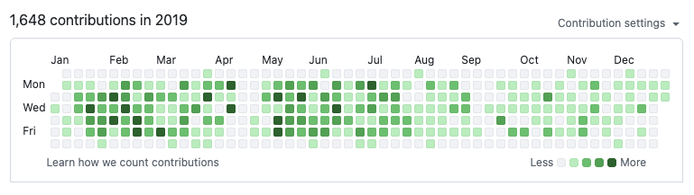

Code
Contributions made with code
I started my career as a developer but contributing to code is what I continue do to as a designer.
As a staff designer, I have had 50 merge requests that were merged to the GitLab project. In a previous role, where I was leading and scaling a design system across a platform of 4 products, I was consistently making changes in a React codebase.

Today the reason I still code is to make feature changes and prototypes to validate ideas. This is an example of a solution validation.
Agentic coding has allowed me to explore concepts of how product features could be and how design workflows could be improved.
Agentic codingCode review cycle time
Explored an alternative way to graph code review cycle time.
Agentic codingFeedback board
A tool to analyze the sentiment and keep track of user comments in feedback issues.
Agentic codingPolkadots
Proof of concept to explore where design system components and patterns were used in the product.
Agentic codingVignette
Proof of concept tool to retrieve designs from issues to create a feed of what other designers are working on.
With coding I have been able to give back to the design community by sharing plugins to design tools.
Design toolingGitLab Figma Plugin
Upload frames and sections from Figma into GitLab work items.
Design toolingSticky Notes
Add editable sticky notes in Figma. Before FigJam was introduced
Design toolingSymbol Insert
A Sketch plugin to lookup symbols to insert using a command palette
I have also explored how the no-code tools could help people create apps. I shared these explorations on a YouTube channel.
No-codeTodoki
A proof of concept using swipeable cards to triage through GitLab todos. Made with Flutterflow.